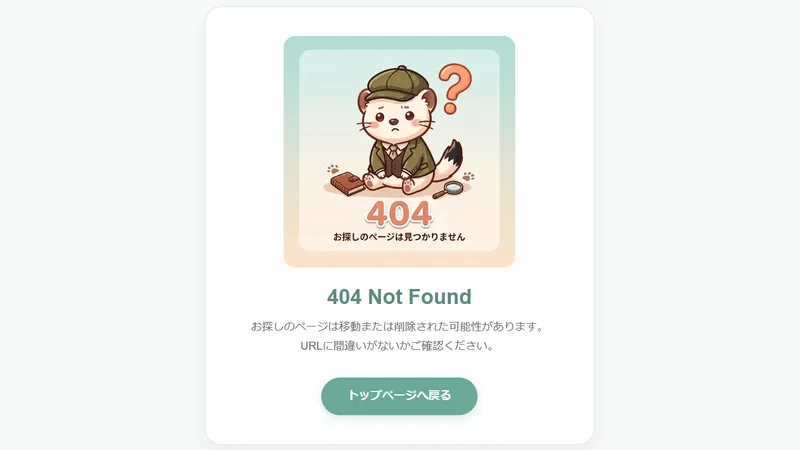
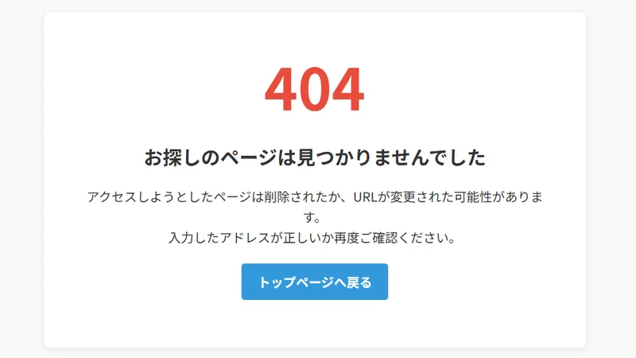

HTMLをちょっと書き加えてデザイン＆使いやすさUP
自分の個人サイトを作っていると、「もう少し個性的にしたいな…」と思うことはありませんか？
今回は、HTMLを少し書き加えるだけで自分のサイトをぐっとおしゃれ＆個性的（満足感アップ！）にできる小技を3つご紹介します！
PCのブラウザでタブを開いているときや、スマートフォンのホーム画面にWebページのショートカットを作成したとき、表示されるアイコンが初期設定のままで物足りないと感じたことはありませんか？
あの小さなアイコンは「ファビコン（Favicon）」と呼ばれるもので、HTMLに数行書き加えるだけでオリジナルの画像に変更できちゃうんです！
以下のコードの画像のパス（href の部分）を自分の画像ファイル名に書き換えて、<head> 〜 </head> 内（<title> タグのすぐ下あたり）に貼り付けましょう！
<!-- PNG画像（推奨）を使う場合 -->
<link rel="icon" href="favicon.png" type="image/png">
<!-- ICO形式を使う場合 -->
<link rel="icon" href="favicon.ico" type="image/x-icon">自作のイラストやサイトのロゴマークを設定しておくと、たくさんのタブを開いているときでも自分のサイトが一目でわかるようになりますよ！
SNSでWebサイトのリンクを共有した際、大きな画像やタイトル、説明文がまとめられた「リンクカード」を見たことがあるのではないでしょうか。
あれは OGP（Open Graph Protocol） という仕組みで設定されており、個人サイトでも簡単に導入できるんです！
以下のコードを <head> 〜 </head> 内（<title> のすぐ下あたり）に貼り付け、各項目を自分のサイトに合わせて書き換えます。
<meta property="og:title" content="ページのタイトル">
<meta property="og:description" content="ページの説明文（100文字程度）">
<meta property="og:type" content="website">
<meta property="og:url" content="https://example.com/">
<meta property="og:image" content="https://example.com/images/ogp.png">
<meta property="og:site_name" content="サイト名">
<meta property="og:locale" content="ja_JP">og:image（画像）や og:url（ページのURL）に指定するパスは、https:// から始まる絶対パス（完全なURL）で記述してください。相対パス（images/ogp.png など）だと、SNS上で画像が読み込まれない原因になります。
SNSで自分のサイトを紹介・宣伝するときにとても目立ちやすくなるので、ぜひ設定しておきましょう！
Webサイトを観覧しているとき「404 Not Found（ページが見つかりません）」という画面が表示されたことはありませんか？
この 404エラーページ も、自分でデザインしたオリジナルのページに差し替えることができます！
ちなみに、当サイトの404エラーページはこんなデザインにしています🐾

404エラーページの設定方法は、ご利用のサーバー環境によって少し異なります。
普段Webページを作成するときと同じようにHTMLでデザインを作成し、ファイル名を 404.html にして保存します。
「ルートディレクトリ」＝ index.html が置いてある最も上の階層のことです。ここに 404.html をアップロードしておくだけで、存在しないURLにアクセスがあった際、サーバーが自動的にこのページを表示してくれます。
上記と同様にHTMLでページを作成し、404.html という名前で保存します。
テキストエディタで以下の1行だけを記述したファイルを作成し、ファイル名を .htaccess（ドットから始まるファイル名）にして保存します。
ErrorDocument 404 /404.html※この記述は、サーバーに「404エラーが起きたら /404.html を表示してね」と指示を出す命令です。
作成した .htaccess を 404.html と同じルートディレクトリにアップロードします。
.htaccess が存在している場合があります。その場合は既存の .htaccess を上書き消去せず、元のコードの最下行に上記の1行を追加してください。もしもに備えて作業前にバックアップを取っておくことをおすすめします。
すぐに使えるシンプルなテンプレートをご用意しました！コピペして自由にカスタマイズしてご活用ください。

<!DOCTYPE html>
<html lang="ja">
<head>
<meta charset="UTF-8">
<meta name="viewport" content="width=device-width, initial-scale=1.0">
<title>ページが見つかりません (404) | サイト名</title>
<style>
body {
font-family: sans-serif;
text-align: center;
padding: 50px 20px;
color: #333;
background-color: #f9f9f9;
}
.container {
max-width: 600px;
margin: 0 auto;
background: #fff;
padding: 40px;
border-radius: 8px;
box-shadow: 0 2px 8px rgba(0,0,0,0.1);
}
h1 {
font-size: 72px;
margin: 0;
color: #e74c3c;
}
h2 {
font-size: 20px;
margin-top: 10px;
}
p {
font-size: 15px;
line-height: 1.6;
margin: 20px 0;
}
a {
display: inline-block;
padding: 12px 24px;
background-color: #3498db;
color: #fff;
text-decoration: none;
border-radius: 4px;
font-weight: bold;
transition: background-color 0.2s;
}
a:hover {
background-color: #2980b9;
}
</style>
</head>
<body>
<div class="container">
<h1>404</h1>
<h2>お探しのページは見つかりませんでした</h2>
<p>
アクセスしようとしたページは削除されたか、URLが変更された可能性があります。<br>
入力したアドレスが正しいか再度ご確認ください。
</p>
<p>
<a href="/">トップページへ戻る</a>
</p>
</div>
</body>
</html>個人サイトをより魅力的＆便利にする小技3選、いかがでしたでしょうか？
どれも数分の作業で簡単に導入できるものばかりです。細かな部分までこだわりを詰め込んで、世界にひとつだけのオリジナルサイト作りを楽しんでみてくださいね🐾